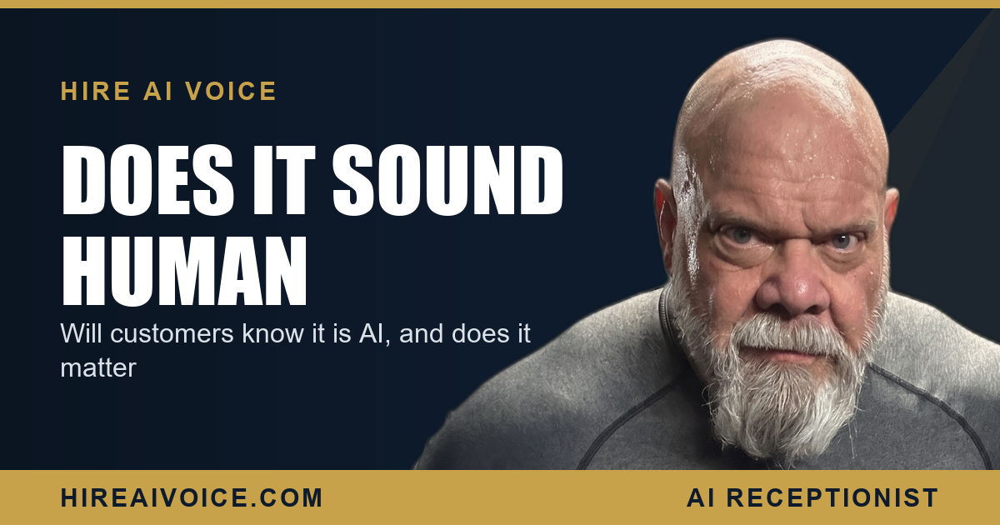

Will Customers Know It Is AI? And Does It Matter

The Short Version
- Will customers know it is AI? Most will not. Modern voice AI sounds natural enough that the majority of callers never notice on a short, helpful call.
- The few who do notice almost never care, because their problem gets solved and the appointment gets booked.
- What callers actually hate is voicemail, ringing forever, and being ignored. A great AI conversation beats all three.
- You choose the transparency level: introduce it as AI, or just answer as your business. Honesty when asked is always the right move.
- When the AI cannot handle a call, it hands off gracefully to you or texts you the details. You are never cut out.
Will Customers Know It Is AI?
Most of them will not. This is the single biggest objection I hear from service business owners, and the honest answer surprises them. Voice AI has crossed a line in the last couple of years. It pauses, it handles interruptions, it answers in a natural cadence, and on a short call where someone just wants a question answered and an appointment booked, the majority of callers cannot tell they are talking to software.
I am going to be straight with you, the way I would be on the phone. I spent years in corrections and on the LAPD, and almost three decades selling real estate here in Santa Clarita. I have heard every kind of phone interaction there is. The bar a caller actually cares about is not "is this a human." It is "is this person helping me right now."
Does It Even Matter If They Know?
Far less than you think. When an owner says "but what if they figure out it is AI," I ask a simple question back: what is the alternative they are comparing it to? Because the real-world alternative is not a perfect human receptionist sitting by the phone. The alternative is voicemail. It is a phone ringing into nothing while you are under a sink or up on a roof. It is the customer hanging up and calling your competitor.
People judge the experience, not the label on the voice.
A caller with a burst pipe at 9 PM is not running a Turing test. They want someone to pick up and book the repair. If a natural-sounding AI answers on the first ring, understands the problem, and gets them on the schedule, the technology behind the voice is irrelevant to them. The ones who do clock that it is AI usually respond with mild curiosity, not anger, and they book anyway because the job got done.
What Callers Actually Hate
Let me reframe the whole worry, because owners are scared of the wrong thing. Callers do not hate AI. They hate being ignored. Here is what actually loses you the job:
That is the real scoreboard. The thing you are worried about, a caller noticing AI, costs you almost nothing. The thing you should be worried about, a caller hitting voicemail and dialing the next name on the list, costs you the job. Every time. You are guarding the wrong door.
Transparency: Should You Disclose It Is AI?
That is your call, and the system supports either way. Some owners want the agent to introduce itself plainly as an AI assistant. Others want it to simply answer with the business name and get to work. Most land somewhere in the middle: the agent does not lead with "I am a robot," but if a caller asks directly, it answers honestly.
My advice, and the way I run my own life, is simple. Do not deceive. There is no legal requirement to announce it in most service contexts, but if someone asks point blank, the right answer is the true one. An AI that says "yes, I am an automated assistant for the business, and I can get you booked right now" loses zero customers. Trying to trick people is what creates problems, and it is not how I do business.
What Happens When AI Cannot Handle a Call?
It hands off gracefully. This is the part that should put the objection to rest entirely. The AI is not a wall between you and your customers. It is a filter that catches the routine volume and routes the exceptions straight to a human, which is you.
When a call is outside what the AI should handle, or the caller asks for a real person, the 24/7 AI receptionist can transfer the call to you, take a detailed message, or text you the caller's name, number, and reason for calling so you can follow up fast. You stay in control of your own business. The AI handles the 80% that is a question and a booking, and it gets you the 20% that needs your judgment, instead of letting it die in a voicemail box you never check.
If you want the mechanics of how it listens, understands, and books, I broke that down in how AI voice agents work. The short version: it is built to know its limits and pass the call up, not to pretend it can do everything.
The Honest Bottom Line
Here is where I land after all of it. Will some customers know it is AI? A few, sometimes. Will it cost you business? No. The caller who notices and still gets booked is a win. The caller who hits your voicemail and never calls back is the loss you are actually living with right now.
A great AI conversation beats a missed call every single time, and a missed call is what most service businesses in Santa Clarita and LA County are quietly losing dozens of jobs to every month. The voice that answers on the first ring, solves the problem, and books the appointment is the one that wins, human or not. Preference follows results, not the brochure.
Hear It For Yourself
Our AI voice agent answers every call 24/7, books the job, follows up, and hands off to you when it should. Live in 72 hours. $297/month, no contracts. Or call Sarah, our live agent, and judge the voice yourself.